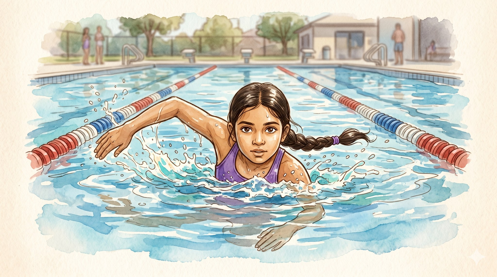
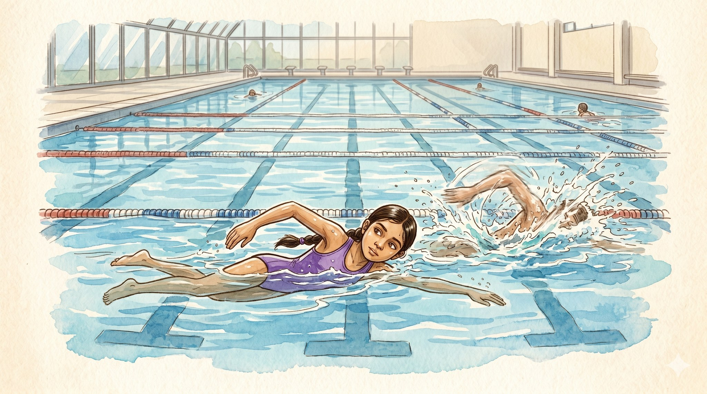
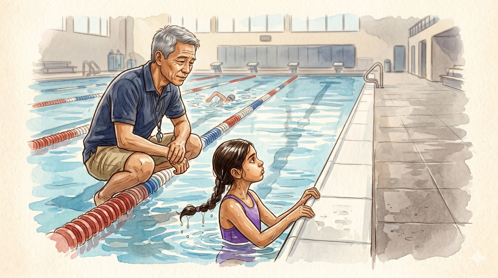
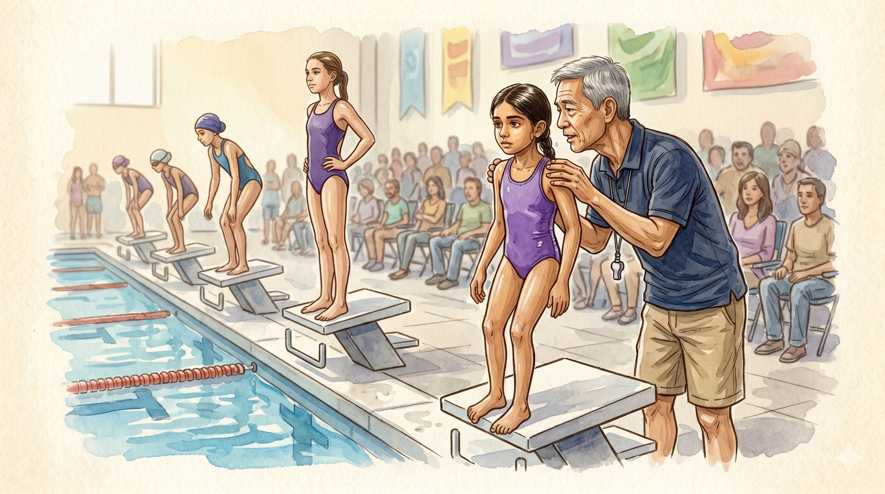
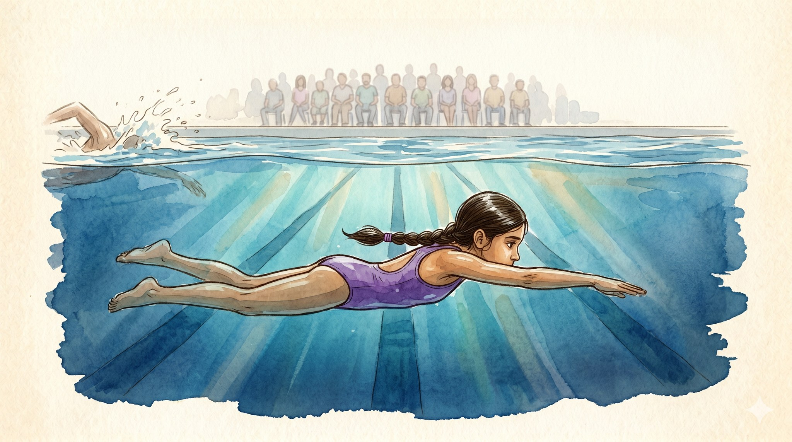
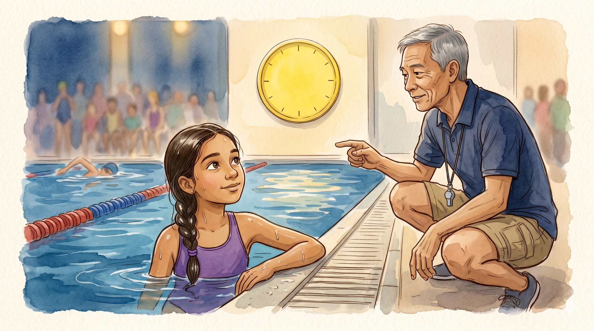

The Girl Who Stopped Looking

A story for ages 6–10 about winning by staying in your own lane

Maya loved her lane. Long, blue, quiet, with one painted line on the bottom, pointing the way.
Kick, breathe, kick. Kick, breathe, kick.
But in the next lane, somebody fast was pulling ahead. Splash, splash, splash.
Maya looked. Her arms forgot their job. Her kicks turned to flutters. Water sneaked up her nose, the worst feeling in the whole world.

Maya held the wall, dripping.
"What are you doing?" asked Coach Ngu, crouching down.
"Watching the other lane. To see if I'm winning."
Coach Ngu shook his head slowly, the way he did when he was saying something for the hundredth time.
"You can't win in somebody else's lane," he said. "You can only swim in yours. So watch yours."

The big meet came. Six lanes. Six girls. And right next to Maya: the fastest swimmer she had ever seen.
Maya stood on the block, toes curled over the edge, shaking a little.
Coach Ngu leaned close, one steady hand on her shoulder.
"I'm not asking you to win," he said quietly. "I'm asking you to swim your race. There's a difference."
The whistle blew. Maya dove.

Under the water, the world went quiet.
Her lane stretched out ahead, blue and clear. Kick, breathe, kick.
A splash landed on her left — close, fast. Maya did not look. The crowd roared far above. Maya did not look.
My lane, my lane, my lane.
Her hand smacked the wall.

Maya pulled her face from the water. The fast girl was already out of the pool. Maya had not won.
Then Coach Ngu pointed at the big yellow clock.
Her fastest time ever — by two whole seconds.
"You swam your race," he said, soft as a secret. "That's the only race that has ever been yours."
Maya looked at her lane. Calm again. Blue again. Hers.
And she smiled.